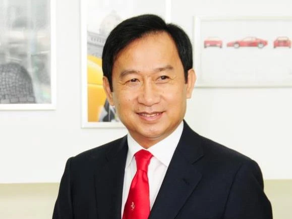
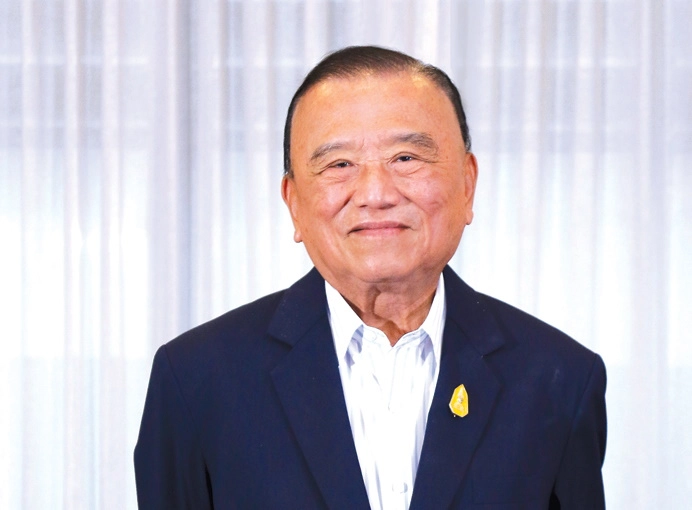

 ประวัติ
สำหรับการบริหารธุรกิจของนายเฉลิมที่เป็นที่รู้จักกันอย่างอย่างกว้างขวางนั่นคือ การดำรงตำแหน่ง กรรมการผู้จัดการ บริษัท สยาม ไวเนอรี่ เทรดดิ้งพลัส จำกัด ผู้ผลิตและจำหน่าย เครื่องดื่ม สปาย ไวน์คลเลอร์, เป็นผู้ผลิตไวน์ชื่อ “มอนซูน แวลลีย์” (Monsoon Valley) และ เครื่องดื่มแอปเปิ้ลเปิ้ลไซเดอร์ล่าสุดภายใต้แบรนด์ MOOSE( มูส ) และ [บริหาร Red Bull] ในประเทศอังกฤษ ทรัพย์สิน: 2.64 หมื่นล้านดอลลาร์
อันดับ 7 ปราเสริฐ ปราสาททองโอสถ
 นายแพทย์ปราเสริฐ ปราสาททองโอสถ เกิดเมื่อ 22 มีนาคม พ.ศ.2476 เป็นบุตรของ หมอทองอยู่ (ช้างบุญชู)ปราสาททองโอสถ และ บุญรอด ปราสาททองโอสถ นายแพทย์ปราเสริฐสำเร็จการศึกษาระดับปริญญาตรีแพทยศาสตร์บัณฑิตจาก คณะแพทยศาสตร์ศิริราชพยาบาล มหาวิทยาลัยมหิดล มูลค่าทรัพย์สิน: 3.1 พันล้านดอลลาร์
created with
Website Builder Software .